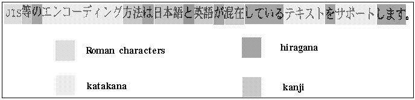
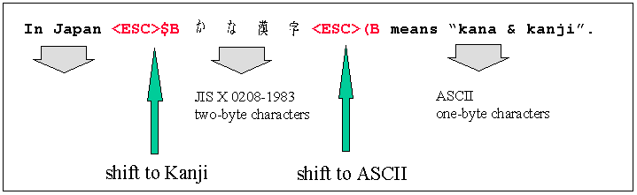
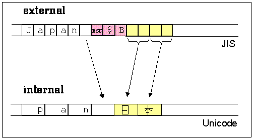

We know that different languages can have different alphabets. The first step in localizing an alphabet is to find a way to represent, or encode, all its characters. In general, alphabets may have different character encodings.
The 7-bit ASCII codeset is the traditional code on UNIX systems.
The 8-bit codesets permit the processing of many Eastern and Western European, Middle Eastern, and Asian Languages. Some are strictly extensions of the 7-bit ASCII codeset; these include the 7-bit ASCII codes and additionally support 128-character codes beyond those of ASCII. Such extensions meet the needs of Western European users. To support languages that have completely different alphabets, such as Arabic and Greek, larger 8-bit codesets have been designed.
Multibyte character codes are required for alphabets of more than 256 characters, such as kanji, which consists of Japanese ideographs based on Chinese characters. Kanji has tens of thousands of characters, each of which is represented by two bytes. To ensure backward compatibility with ASCII, a multibyte codeset is a superset of the ASCII codeset and consists of a mixture of one- and two-byte characters.
For such languages, several encoding schemes have been defined. These encoding schemes provide a set of rules for parsing a byte stream into a group of coded characters.
Handling multibyte character encodings is a challenging task. It involves parsing multibyte character sequences, and in many cases requires conversions between multibyte characters and wide characters.
Understanding multibyte encoding schemes is easier when explained by means of a typical example. One of the earliest and probably biggest markets for multibyte character support is in Japan. Therefore, the following examples are based on encoding schemes for Japanese text processing.
In Japan, a single text message can be composed of characters from four different writing systems. Kanji has tens of thousands of characters, which are represented by pictures. Hiragana and katakana are syllabaries, each containing about 80 sounds, which are also represented as ideographs. The Roman characters include some 95 letters, digits, and punctuation marks.
Figure 1 gives an example of an encoded Japanese sentence composed of these four writing systems:

The sentence means: "Encoding methods such as JIS can support texts that mix Japanese and English."
A number of Japanese character sets are common:
JIS C 6226-1978 | JIS X 0208-1983 |
JIS X 0208-1990 | JIS X 0212-1990 |
JIS-ROMAN | ASCII |
There is no universally recognized multibyte encoding scheme for Japanese. Instead, we deal with the three common multibyte encoding schemes defined below:
JIS (Japanese Industrial Standard) |
Shift-JIS |
EUC (Extended UNIX Code) |
The JIS, or Japanese Industrial Standard, supports a number of standard Japanese character sets, some requiring one byte, others two. Escape sequences are required to shift between one- and two-byte modes.
Escape sequences, also referred to as shift sequences, are sequences of control characters. Control characters do not belong to any of the alphabets. They are artificial characters that do not have a visual representation. However, they are part of the encoding scheme, where they serve as separators between different character sets, and indicate a switch in the way a character sequence is interpreted. The use of the shift sequence is demonstrated in Figure 2.

For encoding schemes containing shift sequences, like JIS, it is necessary to maintain a shift state while parsing a character sequence. In the example above, we are in some initial shift state at the start of the sequence. Here it is ASCII. Therefore, characters are assumed to be one-byte ASCII codes until the shift sequence <ESC>$B is seen. This switches us to two-byte mode, as defined by JIS X 0208-1983. The shift sequence <ESC>(B then switches us back to ASCII mode.
Encoding schemes that use shift state are not very efficient for internal storage or processing. Sometimes shift sequences require up to six bytes. Frequent switching between character sets in a file of strings could cause the number of bytes used in shift sequences to exceed the number of bytes used to represent the actual data!
Encodings containing shift sequences are used primarily as an external code, which allows information interchange between a program and the outside world.
Despite its name, Shift-JIS has nothing to do with shift sequences and states. In this encoding scheme, each byte is inspected to see if it is a one-byte character or the first byte of a two-byte character. This is determined by reserving a set of byte values for certain purposes. For example:
Any byte having a value in the range 0x21-7E is assumed to be a one-byte ASCII/JIS Roman character.
Any byte having a value in the range 0xA1-DF is assumed to be a one-byte half-width katakana character.
Any byte having a value in the range 0x81-9F or 0xE0-EF is assumed to be the first byte of a two-byte character from the set JIS X 0208-1990. The second byte must have a value in the range 0x40-7E or 0x80-FC.
While this encoding is more compact than JIS, it cannot represent as many characters as JIS. In fact, Shift-JIS cannot represent any characters in the supplemental character set JIS X 0212-1990, which contains more than 6,000 characters.
Extended UNIX Code (EUC) is not peculiar to Japanese encoding. It was developed as a method for handling multiple character sets, Japanese or otherwise, within a single text stream.
The EUC encoding is much more extensible than Shift-JIS since it allows for characters containing more than two bytes. The encoding scheme used for Japanese characters is as follows:
Any byte having a value in the range 0x21-7E is assumed to be a one-byte ASCII/JIS Roman character.
Any byte having a value in the range 0xA1-FE is assumed to be the first byte of a two-byte character from the set JIS X0208-1990. The second byte must also have a value in that range.
Any byte having the value 0x8E is assumed to be followed by a second byte with a value in the range 0xA1-DF, which represents a half-width katakana character.
Any byte having the value 0x8F is assumed to be followed by two more bytes with values in the range 0xA1-FE, which together represent a character from the set JIS X0212-1990.
The last two cases involve a prefix byte with values 0x8E and 0x8F, respectively. These bytes are somewhat like shift sequences in that they introduce a change in subsequent byte interpretation. However, unlike the shift sequences in JIS which introduce a sequence, these prefix bytes must precede every multibyte character, not just the first in a sequence. For this reason, each multibyte character encoded in this manner stands alone and EUC is not considered to involve shift states.
The three multibyte encodings just described are typically used in separate areas:
JIS is the primary encoding method used for electronic transmission such as email because it uses only 7 bits of each byte. This is required because some network paths strip the eighth bit from characters. Escape sequences are used to switch between one- and two-byte modes, as well as between different character sets.
Shift-JIS was invented by Microsoft and is used on MS-DOS-based machines. Each byte is inspected to see if it is a one-byte character or the first byte of a two-byte character. Shift-JIS does not support as many characters as JIS and EUC do.
EUC encoding is implemented as the internal code for most UNIX-based platforms. It allows for characters containing more than two bytes, and is much more extensible that Shift-JIS. EUC is a general method for handling multiple character sets. It is not peculiar to Japanese encoding.
Multibyte encoding provides an efficient way to move characters around outside programs, and between programs and the outside world. Once inside a program, however, it is easier and more efficient to deal with characters that have the same size and format. We call these wide characters.
Here is an example that illustrates how wide characters make text processing inside a program easier. Consider a filename string containing a directory path with adjacent names separated by a slash, such as /CC/include/locale.h. To find the actual filename in a single-byte character string, we can start at the back of the string. When we find the first separator, we know where the filename starts. If the string contains multibyte characters, we scan from the front so we don't inspect bytes out of context. If the string contains wide characters, however, we can treat it like a single-byte character and scan from the back.
Conceptually, you can think of wide character sets as being extended ASCII or EBCDIC; each unique character is assigned a distinct value. Since they are used as the counterpart to a multibyte encoding, wide character sets must allow representation of all characters that can be represented in a multibyte encoding as wide characters. As multibyte encodings support thousands of characters, wide characters are usually larger that one byte -- typically two or four bytes. All characters in a wide character set are of equal size. The size of a wide character is not universally fixed, although this depends on the particular wide character set.
There are many wide character standards, including those shown below:
ISO 10646.UCS-2 | 16-bit characters |
ISO 10646.UCS-4 | 32-bit characters |
Unicode | 16-bit characters |
The programming language C++ supports wide characters; their native type in C++ is called wchar_t. The syntax for wide character constants and wide character strings is similar to that for ordinary, narrow character constants and strings:
L'a' is a wide character constant, and |
L"abc" is a wide character string. |
Since wide characters are usually used for internal representation of characters in a program, and multibyte encodings are used for external representation, converting multibytes to wide characters is a common task during input/output operations. Input to and output from a file is a typical example. The file usually contains multibyte characters. When you read such a file, you convert these multibyte characters into wide characters that you store in an internal wide character buffer for further processing. When you write to a multibyte file, you have to convert the wide characters held internally into multibytes for storage on a external file. Figure 3 demonstrates how this conversion during file input is done:

The conversion from a multibyte sequence into a wide character sequence requires expansion of one-byte characters into two- or four-byte wide characters. Escape sequences are eliminated. Multibytes that consist of two or more bytes are translated into their wide character equivalents.